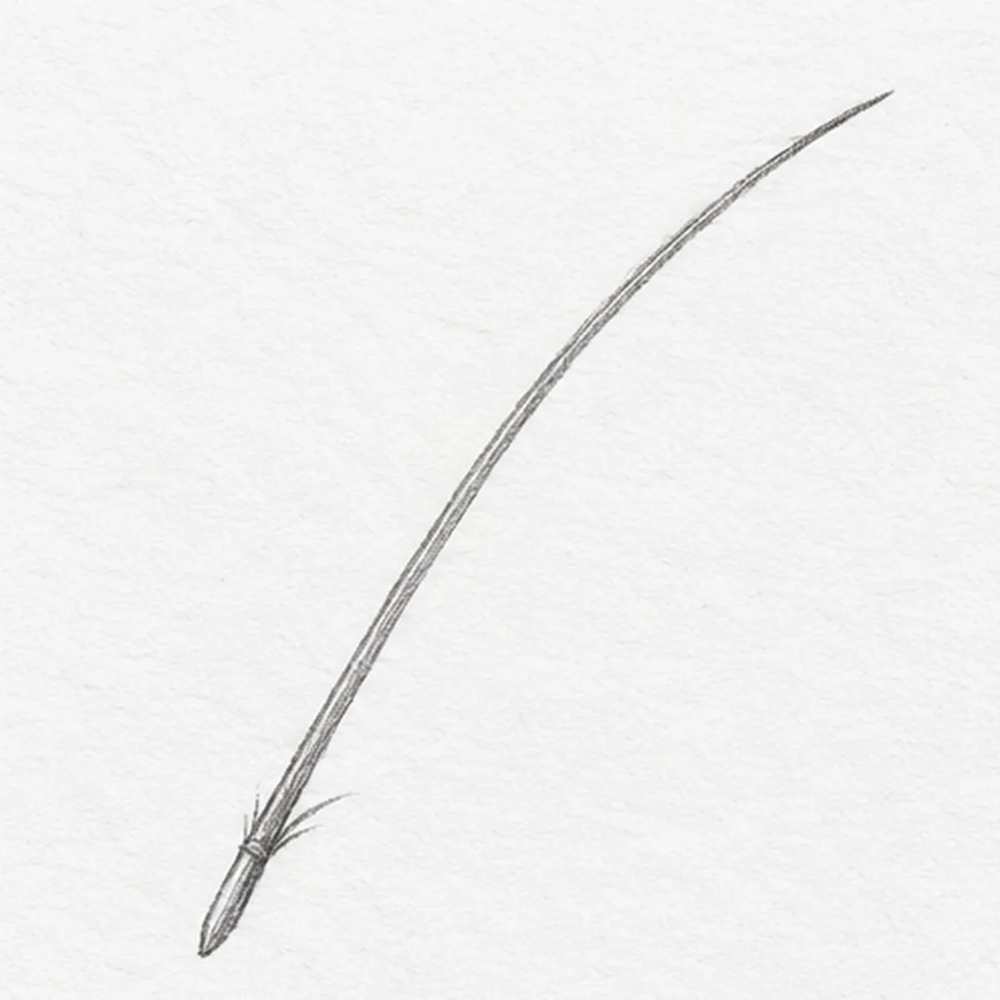
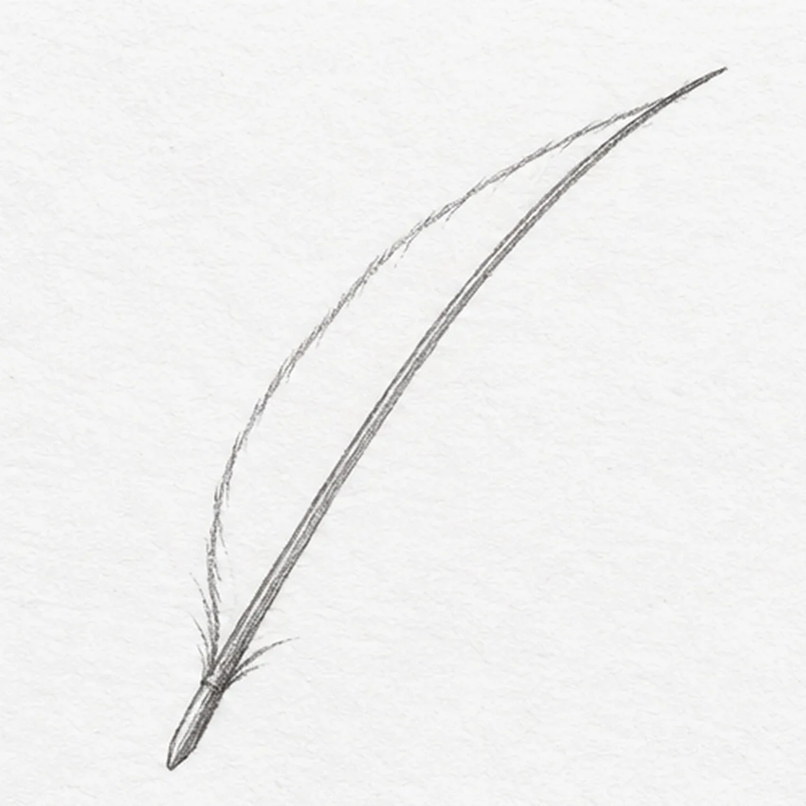
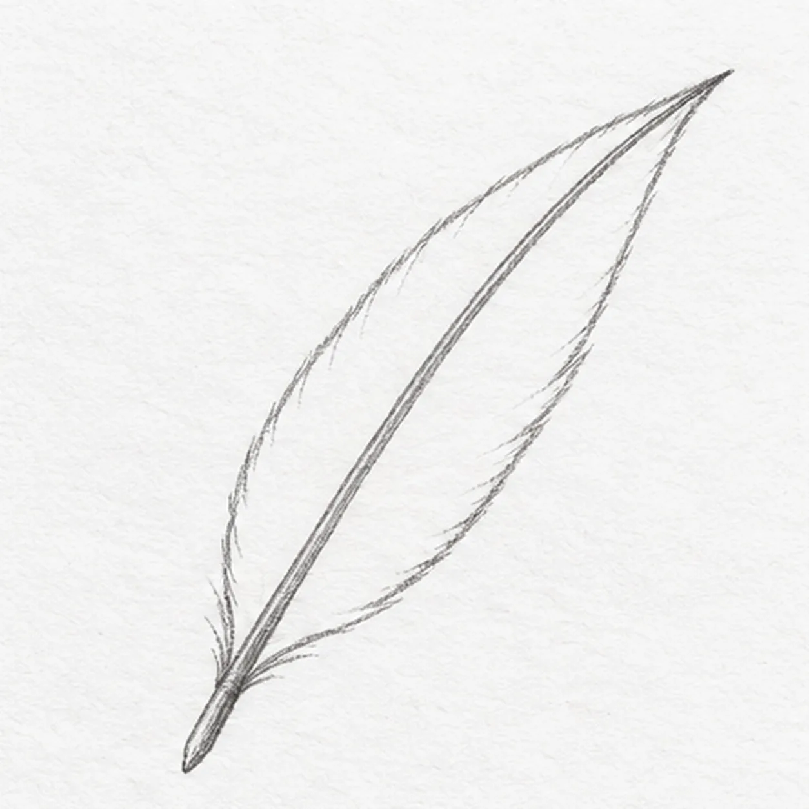
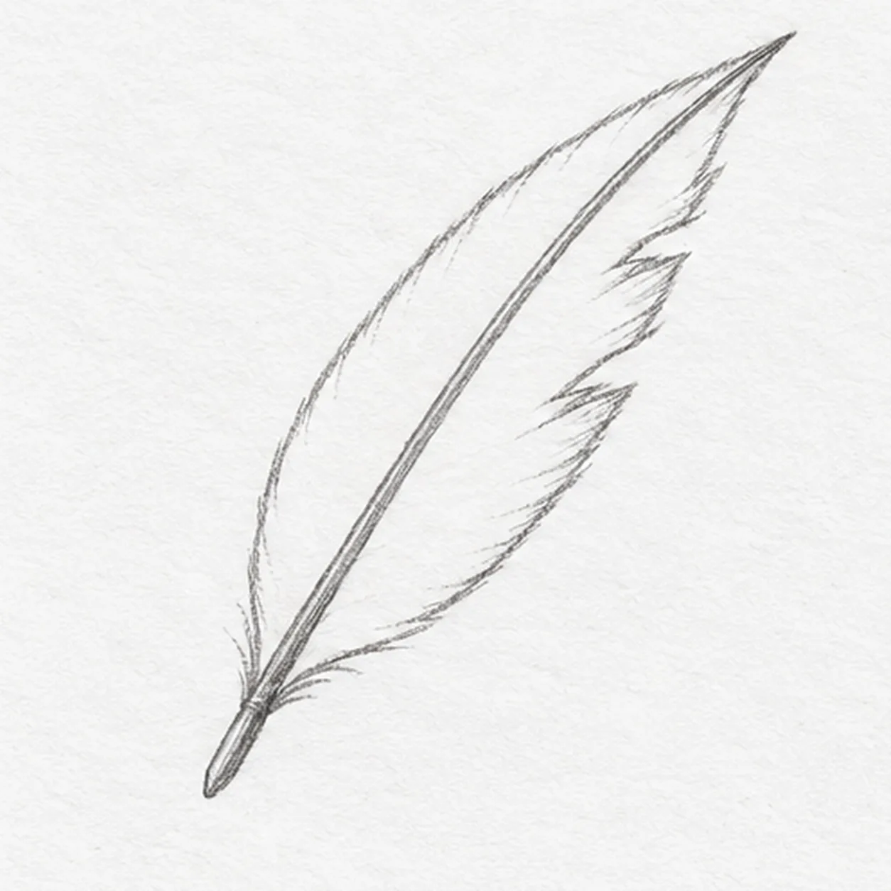
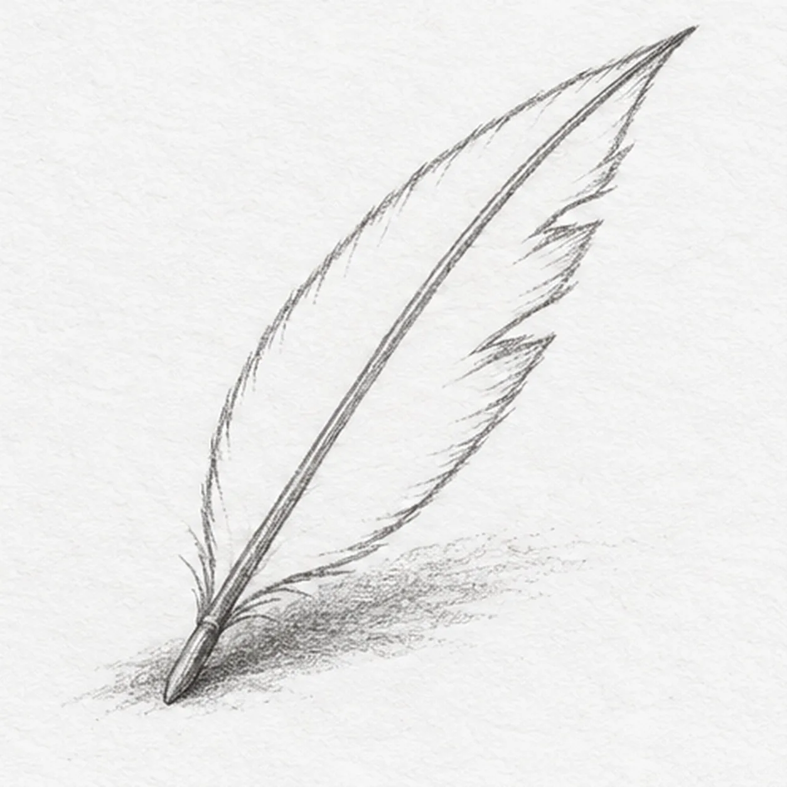

Pencil ready?
Let's draw a curled feather
Treat this as one small practice round: build the subject lightly, notice the shapes, then darken only the lines that help the finished sketch.
-
01

Set the quill
Start low on the left and draw a gently bowed line toward an upper-right tip; thicken only its lower end into a short quill.
Sketch tip: Ghost the rising curve before touching down; keep the lower quill short.
-
02

Sweep the left vane
From the quill base, sweep one long convex edge left of the shaft and bring it into the existing upper tip.
Sketch tip: Use the same upper tip, and leave open paper to the right for the second vane.
-
03

Close the right vane
From that same upper tip, curve a narrower edge down the right side and return it to the quill base without moving the shaft.
Sketch tip: Keep the right vane narrower so the shaft remains off center.
-
04

Break the vane edge
Leave three tiny gaps along the right edge and pull a few short slanted barbs from those gaps toward the shaft.
Sketch tip: Count three edge breaks and aim each short barb toward the central shaft.
-
05

Ground the feather
Lay a few short horizontal graphite strokes beneath the lower quill and left vane, leaving white paper between them.
Sketch tip: Leave gaps between shadow strokes so the feather still feels light.
-
06

Shade the feather
Use light graphite strokes from the shaft toward both edges, darken the quill and broken ground shadow, and leave narrow paper highlights.
Sketch tip: Shade out from the shaft rather than along the length of the feather.